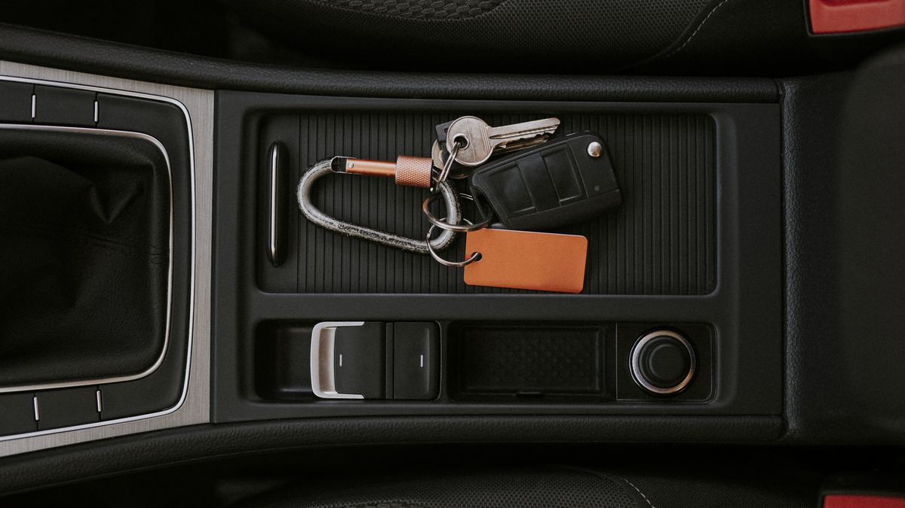

Otwieranie auta · 4 min czytania
Kluczyki zatrzaśnięte w aucie – co zrobić krok po kroku
Kluczyki zatrzaśnięte w aucie to jedna z najczęstszych wpadek kierowców. Podpowiadamy, co zrobić krok po kroku, czego unikać, żeby nie narobić szkód, i jak nie dopuścić do powtórki.

Kluczyki zatrzaśnięte w aucie to sytuacja, która przytrafia się nawet najbardziej uważnym kierowcom: przy tankowaniu, podczas pakowania zakupów, gdy dziecko pobawi się pilotem albo gdy samochód sam zarygluje drzwi. Pierwszy odruch to zwykle złość i chęć, żeby „coś zrobić” na szybko. Zanim jednak sięgniesz po wieszak czy śrubokręt, przejdź spokojnie przez kolejne kroki – oszczędzisz sobie nerwów i kosztownych napraw.
Krok 1: sprawdź, czy w aucie nie zostało dziecko lub zwierzę
To zawsze pierwsze pytanie. Jeśli w zamkniętym samochodzie jest dziecko albo zwierzę, a świeci słońce, jest ciepło lub widzisz coś niepokojącego – natychmiast dzwoń na 112. Dyspozytor oceni sytuację i powie, co robić. W słońcu kabina nagrzewa się bardzo szybko i liczy się każda minuta.
Więcej o tym, jak zachować się w takiej chwili, przeczytasz w poradniku dziecko lub pies zamknięty w aucie – co robić.
Krok 2: obejdź samochód dookoła
Brzmi banalnie, ale bywa skuteczne. Sprawdź po kolei:
- wszystkie drzwi, także tylne – czasem któreś nie zaryglowały się do końca,
- klapę bagażnika – mogła zostać tylko przymknięta,
- czy kluczyk na pewno jest w środku – zajrzyj przez szyby, przeszukaj kieszenie i torbę. Jeśli go nie widać, być może zginął, a to oznacza inny plan działania.
Warto też wiedzieć, skąd biorą się „zagadkowe” zatrzaśnięcia. Wiele aut ma funkcję ponownego ryglowania: jeśli odblokujesz samochód pilotem i w ciągu kilkudziesięciu sekund nie otworzysz żadnych drzwi, auto zamknie się samo. Wystarczy przypadkowe naciśnięcie przycisku w kieszeni albo w rękach dziecka.
Krok 3: zapasowy kluczyk, aplikacja, assistance
- Zapasowy kluczyk – jeśli ktoś może go przywieźć, to często najprostsze rozwiązanie. Trzymaj go w domu, nigdy w samochodzie. Dlaczego to takie ważne, wyjaśniamy w artykule zapasowy kluczyk do auta.
- Aplikacja producenta – część nowszych aut można odblokować zdalnie z telefonu, o ile usługa była wcześniej aktywowana, a samochód ma zasięg sieci.
- Assistance – zajrzyj do warunków polisy lub pakietu serwisowego. Niektóre pakiety obejmują pomoc przy zatrzaśnięciu kluczyków, inne nie. Najlepiej sprawdzić to wcześniej, a nie na parkingu.
Kluczyki zatrzaśnięte w aucie – czego nie robić
Domowe sposoby z internetu często kończą się drożej niż profesjonalne otwarcie. Unikaj zwłaszcza:
- wsuwania drutu lub wieszaka między szybę a uszczelkę – w drzwiach biegną przewody, cięgna zamka, mechanizm szyby i czujniki; łatwo coś zerwać albo porysować szybę,
- podważania drzwi śrubokrętem czy klinem – wygięta rama i zniszczona uszczelka to potem świst, przecieki i wizyta u blacharza,
- wybijania szyby, gdy nikomu nic nie grozi – nowa szyba, sprzątanie odłamków i ryzyko skaleczenia to wysoka cena za kilka zaoszczędzonych minut,
- szarpania klamki – w wielu autach mechanizm klamki to plastik i cienkie cięgno, które łatwo uszkodzić.
Jeśli ktoś przypadkowy proponuje, że „otworzy auto w minutę” i nie pyta o żadne dokumenty – podziękuj. Rzetelny fachowiec zawsze sprawdza, czy masz prawo do pojazdu. Chroni w ten sposób także Ciebie: tak samo sprawdzi każdego, kto poprosiłby o otwarcie Twojego auta.
Krok 4: wezwij pomoc i przygotuj informacje
Gdy zapasowego kluczyka nie ma, a inne sposoby zawiodły, pora zadzwonić po awaryjne otwieranie samochodu. Rozmowa pójdzie sprawniej, jeśli od razu podasz:
- markę, model i rocznik auta,
- dokładne miejsce postoju – adres, parking, charakterystyczny punkt w pobliżu,
- gdzie leżą kluczyki: w kabinie, w stacyjce czy w bagażniku (ten ostatni przypadek opisujemy w poradniku kluczyki w bagażniku – co zrobić),
- czy auto ma system bezkluczykowy (keyless) i czy włączył się alarm.
Nasza zasada jest prosta: cenę podajemy przez telefon, zanim zaczniemy pracę. Przed otwarciem poprosimy o dowód osobisty i dowód rejestracyjny. Jeśli dokumenty zostały w aucie, sprawdzimy je zaraz po otwarciu, zanim odjedziesz. Więcej o samej usłudze znajdziesz na stronie awaryjne otwieranie samochodów.
Gdy silnik pracuje, a drzwi są zamknięte
Zdarza się, że auto zarygluje się z kluczykiem w stacyjce i pracującym silnikiem – na przykład gdy wysiądziesz na moment, nie gasząc go. Powiedz o tym od razu przez telefon i nie odchodź od samochodu. Auto z pracującym silnikiem i kluczykiem w środku to łatwy łup, więc ktoś powinien przy nim czekać aż do otwarcia drzwi.
Jak uniknąć zatrzaśnięcia kluczyków w przyszłości
- Kluczyk w dłoni lub w kieszeni, zanim zamkniesz drzwi – ten jeden nawyk rozwiązuje większość problemów.
- Nie odkładaj kluczyka na siedzenie, dach ani do bagażnika podczas pakowania zakupów czy walizek.
- Sprawdź w instrukcji, jak działa automatyczne ryglowanie w Twoim aucie – w części modeli można je wyłączyć lub zmienić jego ustawienia.
- Nie dawaj dzieciom kluczyka do zabawy – wystarczy jedno naciśnięcie przycisku.
- Wymieniaj baterię w pilocie, gdy zasięg wyraźnie słabnie. W autach keyless słaba bateria może sprawić, że samochód nie wykryje kluczyka w kabinie.
Noś dowód rejestracyjny przy sobie, np. w portfelu, a nie w schowku. Gdy kluczyki zatrzasną się w środku, szybko potwierdzisz, że auto jest Twoje.
Pomoc przy zatrzaśniętych kluczykach o każdej porze
Zatrzaśnięcie kluczyków rzadko zdarza się w dogodnym momencie – częściej późnym wieczorem, w deszczu albo w drodze do pracy. Dlatego działamy 24 godziny na dobę, 7 dni w tygodniu, i dojeżdżamy do klienta w Kielcach oraz okolicznych miejscowościach. Zadzwoń pod numer 668 292 270, opisz sytuację, a usłyszysz cenę, zanim cokolwiek zaczniemy.